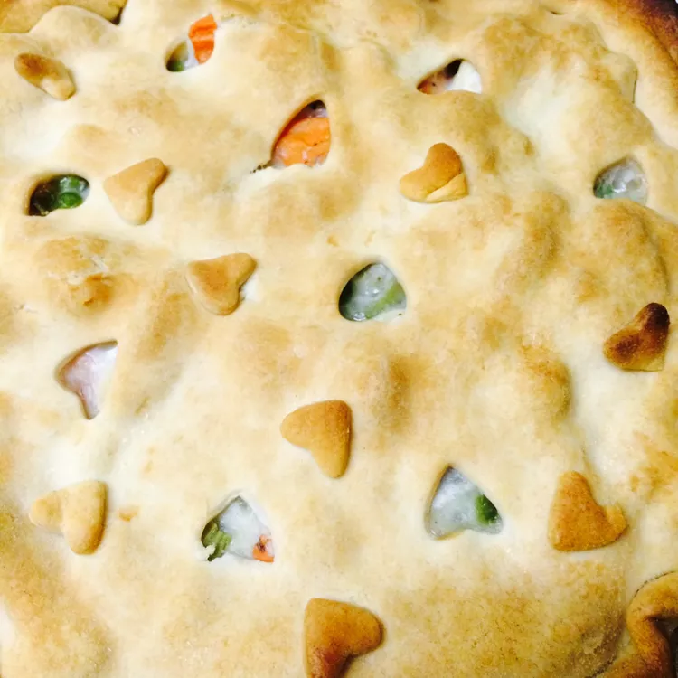

Chicken pie
Chicken pie - this is one of my favorite recipe
Description
A delicious chicken pie made from scratch with carrots, peas, and celery in a pre-made crust.
Add thyme and poultry seasoning for more flavor.
Every home cook needs a good chicken pot pie recipe in their repertoire. On the hunt for a new family favorite?
You're in luck! This homemade chicken pot pie definitely deserves a permanent spot in your recipe box.
Chicken pie ingredients
Here's what you'll need to make the best chicken pot pie of your life:
- Chicken
Boneless, skinless chicken breasts (cut into cubes) are ideal for making classic chicken pot pie.
- Vegetables
This chicken pot pie recipe calls for the usual suspects: peas, carrots, onions, and celery.
You could toss in some mushrooms or green peppers if you want to incorporate more veggies.
- Butter and Flour
The chicken pot pie filling starts with a roux made with butter and all-purpose flour.
- Seasoning
Achieve the perfect cozy flavor with salt, pepper, and celery seed. Of course, you can add more seasonings to suit your taste.
- Broth and Milk
Chicken broth and milk add depth of flavor and help create a smooth and decadent chicken pot pie filling consistency.
- Pie Crusts
You'll need two unbaked pie crusts. If you opt for the homemade route, you can't go wrong with our Butter Flaky Pie Crust recipe — but store-bought is perfectly fine.

List of ingredients:
- 1 cup sliced carrots
- 1 pound skinless, boneless chicken breast halves - cubed
- 1 cup frozen green peas
- ½ cup sliced celery
- ⅓ cup butter
- ⅓ cup chopped onion
- ⅓ cup all-purpose flour
- ½ teaspoon salt
- ¼ teaspoon black pepper
- ¼ teaspoon celery seed
- 1 ¾ cups chicken broth
- ⅔ cup milk
- 2 (9 inch) unbaked pie crusts
Steps how to make delicious chicken pie:
- Boil the cubed chicken with the carrots, peas, and celery for about 15 minutes. Drain and set aside. Cook the onions in butter until they're translucent, then stir in the flour and seasonings. Add the chicken broth and milk and simmer until the filling is thick.
- Combine chicken, carrots, peas, and celery in a saucepan; add water to cover and bring to a boil. Boil for 15 minutes, then remove from the heat and drain.
- While the chicken is cooking, melt butter in another saucepan over medium heat. Add onion and cook until soft and translucent, 5 to 7 minutes. Stir in flour, salt, pepper, and celery seed. Slowly stir in chicken broth and milk. Reduce heat to medium-low and simmer until thick, 5 to 10 minutes. Remove from heat and set aside.
- Place chicken and vegetables in the bottom pie crust. Pour hot liquid mixture over top. Cover with top crust, seal the edges, and cut away any excess dough. Make several small slits in the top crust to allow steam to escape.
- Bake in the preheated oven until pastry is golden brown and filling is bubbly, 30 to 35 minutes. Cool for 10 minutes before serving.
Nutrition Facts (per serving)
412 - Calories
24g - Fat
30g - Carbs
18g - Protein